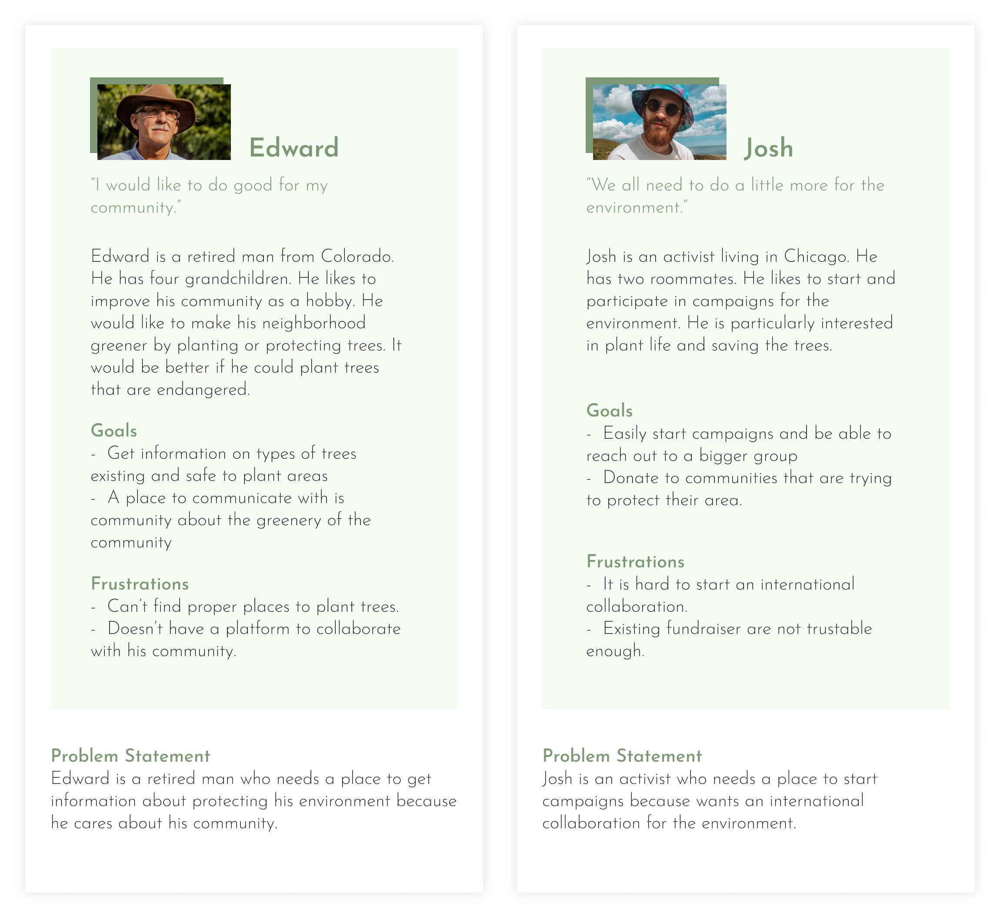
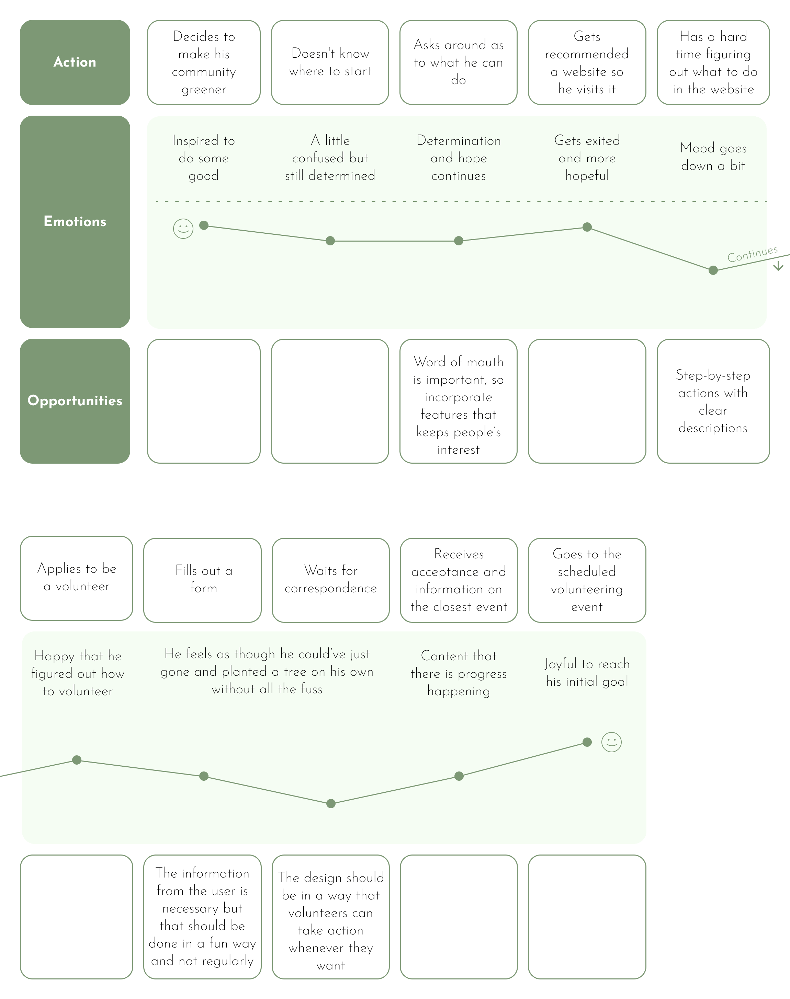
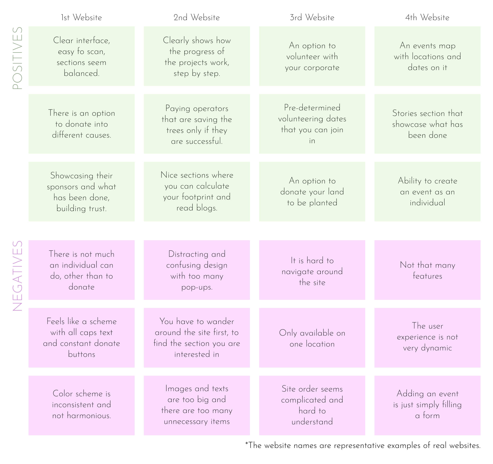
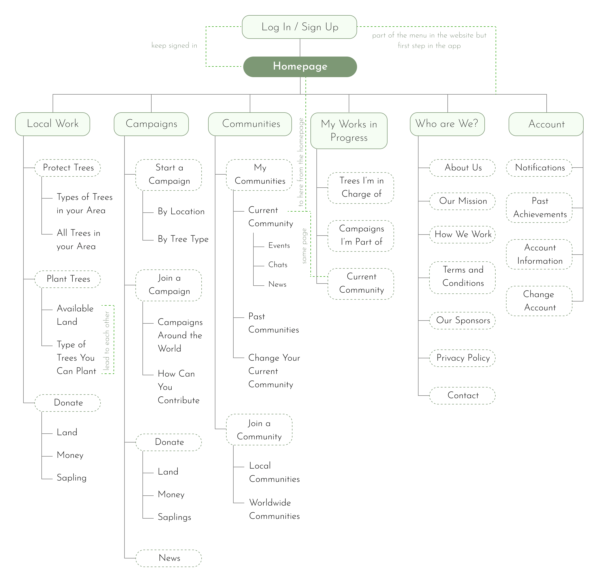
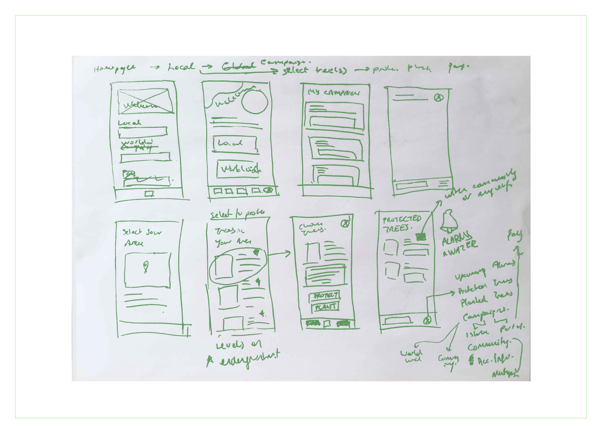
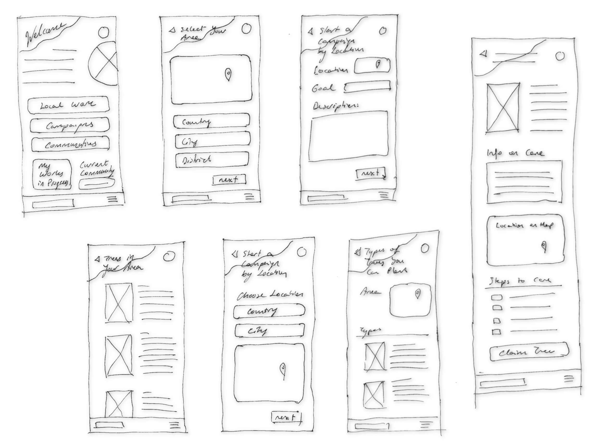
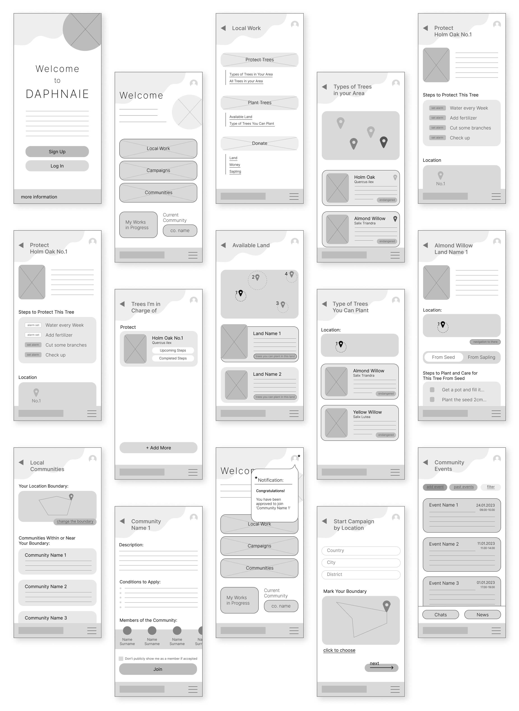
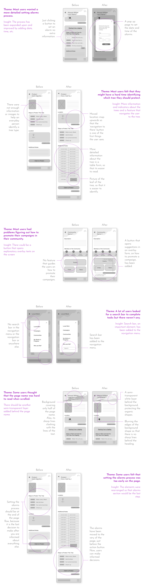
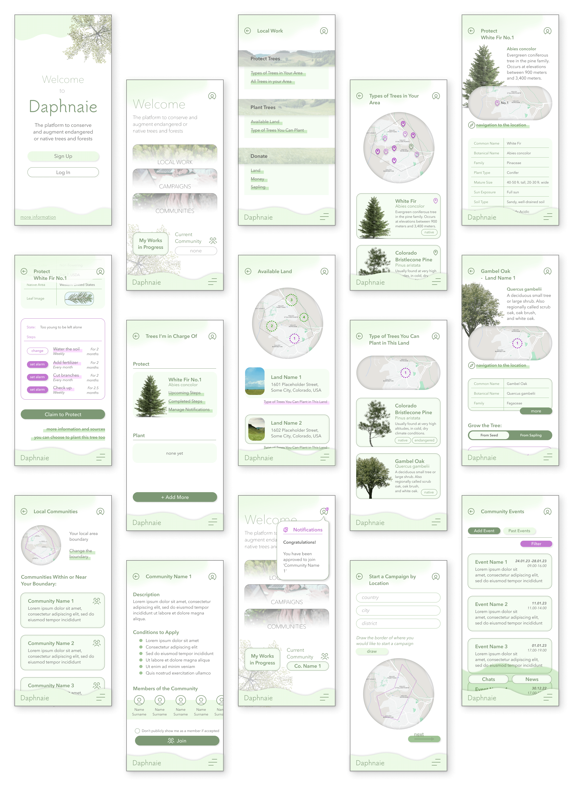
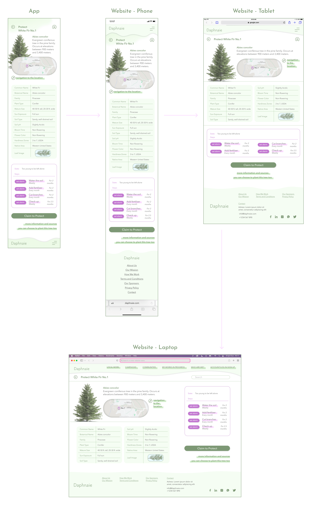

Daphnaie is an app (and a responsive website) for social good that helps people protect existing endangered or native trees and plant new ones. While also bringing communities together and providing a platform for international campaigns.
UX designer designing an app from conception to delivery.
Conducting research, paper and digital wireframing, low and high-fidelity prototyping, conducting usability studies, and iterating on designs.
March-April 2023
There were no platforms simple and accessible enough to help regular people who wanted to plant or protect trees or create campaigns and form groups for the environment.
To design an app and a website for ordinary people to participate in helping the environment safely. This included providing appropriate spaces and instructions for planting native or endangered trees, protecting existing trees, connecting with people around you to form communities and starting large-scale campaigns.
I contacted people I knew who loved nature and were passionate about the environment. I tried to understand what problems they faced during their endeavours and what they would want in an app that helps the environment. The main direction I wanted to go was centred around protecting the trees, so the questions were mainly focused on that.
Here are some of the questions I've asked:
"What are some of the challenges you've faced while working for the environment?"
"Have you ever planted a tree, and would you like to plant more?"
"Would you like to collaborate with other people or groups for activities relating to saving the trees?"
"Do you ever feel like there are obstacles on your path, and what can be done to avoid them?"
Interviewees were clearly divided into two: People interested in actively planting or protecting at a small scale with their community and people who wanted to branch out and reach out to the world and start great activities.
User journey map for Edward. He eventually reached his goals but had to be very persistent and patient. A lot of people wouldn't be this goal-oriented, so it was integral to make every step easy for the users.
Time for the competitive audit. The most common problem with all the other competitors was that they were too local or too large. They either catered only to a specific area in the world or made a huge spectacle where all an individual could do was to donate.
After the findings of the reasarch, the main structure of the app has become more defined. It has been clearer to me how I wanted to move forward in this project such as what functions to focus on, how users would experience the app etc.
In the sitemap I wanted there to be three main functions and three more supporting functions. Main functions were: Local Work, Campaigns and Communities. Since the design is meant to be responsive and also be functioning as a website, sign in and log in actions were located in different steps on the sitemap for the app and the website.
Here, both the user flow of planting a tree in your local area and starting a campaign user flow is shown.
Edward decides to plant an endangered tree in his neighbourhood. He chooses an available area shown on the app and then chooses a type of endangered tree he would like to plant. After finishing the process, he waits for the sapling to arrive then plants it. He uploads the photo of the planted sapling to the app.
Josh decides to join a community made for his neighbourhood. He becomes active in that community and then starts a campaign. Then, he promotes that campaign in his community
Some of the attributes I wanted to add, along with the ones taken from the sitemap and the userflow: Alarms and notifications as reminders, tags indicating a tree is endangered or native, maps to show where the land or trees are, etc.
The main focus of low-fidelity design was to decide on the structure of the pages and their interactions with one another. The goal was to have similar forms and therefore, to have a seamless flow through the app. The interactions and functions of the buttons were decided upon in this phase.
Since the app’s core concept was nature and protecting the trees, I’ve chosen to focus on and integrate organic forms into the design to inspire the feeling of nature in the sketches.
Sketches were transferred to the digital platform and became wireframes. I've mostly stayed faithful to the sketches, but as I continued making the wireframes, I noticed mistakes and missing features in them. So, I've improved upon the sketches and extended the number of the wireframes.
The first prototype was made by connecting the wireframes and deciding how one action would trigger a reaction. Helps to visualise how a person would use the app.
The prototype visualizes some of the user flows in the following order:
- Signing up,
- Choosing a local tree to protect and setting its alarms,
- Planting a tree from a sapling,
- Joining a local community,
- Starting a campaign by location and making the campaign an event in the community,
- Announcing said campaign in your community.
After the prototype was finished, it was time to test it. I prepared the test KPIs, goals, prompts, and so on, then sent the prototype to some people and watched their progress through screen sharing. Based on feedback and my observations, I've improved the prototype.
A lot of the changes were based on adding more detail; people needed more information and to be guided through the app. They also wanted to have more control over their actions on the app. To balance these contradicting demands, I decided to add more options of choice in the guided user flow. For example, now the user has the option to set alarms whenever they like, but alarms are at the very end of the page so that the user is more informed about the process before setting the alarms.
The high-fidelity design aimed to inspire feelings of cheerfulness, nature, adventure, and purpose. To make them happen, I've used colours, shapes, images, animated transitions, and elevational differences in the form of shadows, transparency and overlays.
To channel nature, the obvious colour choice was shades of green. As accents, the opposite of the green in the colour wheel was chosen, magenta. The idea of organic and soft forms has been maintained and harsh lines were avoided to make the user feel like they are out in nature. Images of trees and scenery were used abundantly for that reason -along with identification purposes, of course- also.
The high-fidelity prototype. Interactions and transitions have improved. Movements are now more seamless. Animations such as making an image bigger are used in transitions.
The prototype visualizes some of the user flows in the following order:
- Signing up,
- Choosing a local tree to protect and setting its alarms,
- Planting a tree from a sapling,
- Joining a local community,
- Starting a campaign by location and making the campaign an event in the community,
- Announcing said campaign in your community.
As I decided to build the website from the smallest screen to the biggest, I started from a phone size to a tablet, then a laptop. The phone website began forming after I completed the app design. The phone website wasn't much different from the app other than the navigation and the footing. Then, the contents were adjusted to acclimate to different screen sizes.
made by M. Dilara Özdemir
with love